Первые письменные сообщения, возможно, относящиеся к Кабо-Верде, имеются в произведениях
Помпония Мелы и «Естественной истории» Плиния Старшего, где упоминаются острова Горгады
(«острова горгон») места обитания мифических горгон, убитых Персеем.
В 1456 году венецианец Кадамосто открыл ряд островов архипелага, и в следующее десятилетие
Диогу Гомеш и Антониу де Ноли, капитаны на службе у португальского инфанта Энрике Мореплавателя,
открыли остальные острова.
По своему расположению напротив полуострова Зелёный мыс на африканском
континенте (порт. Cabo Verde) они были так же названы «Острова Кабо-Верде»,
и именовались так весь колониальный период.
Острова были необитаемы и покрыты густой растительностью.
В 1462 году началось заселение островов португальскими переселенцами-колонистами
(первые колонисты поселились на о-ве Сантьягу).
В 1495 году острова официально были объявлены владением Португалии.
Расположенный на перекрестке торговых путей между Европой, Африкой и Новым Светом,
благодаря трансатлантической работорговле в XVI столетии архипелаг процветал, что
неоднократно привлекало внимание многочисленных пиратов, включая Фрэнсиса Дрейка,
который в 1582 и 1585 годах нападал на Рибейру-Гранди.
В период испанского владычества в Португалии (с 1581 до 1640 года) острова
находились под управлением Испании.
В ноябре 1974 года в Лиссабоне было подписано соглашение о провозглашении независимости страны.
В марте 1986 года Республика Острова Зелёного Мыса была переименована в Республику Кабо-Верде.
Молуккские острова
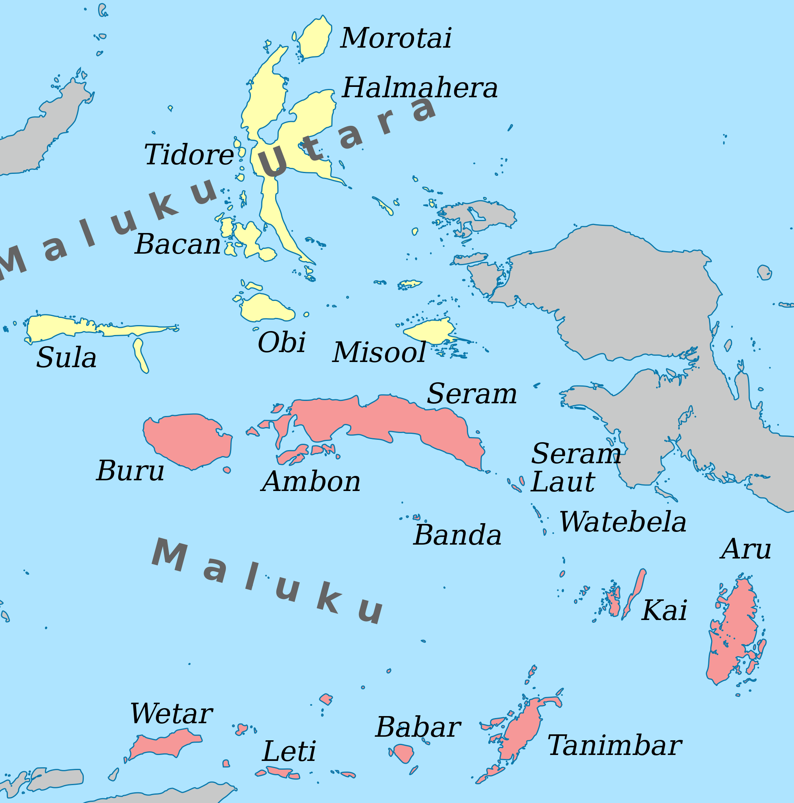
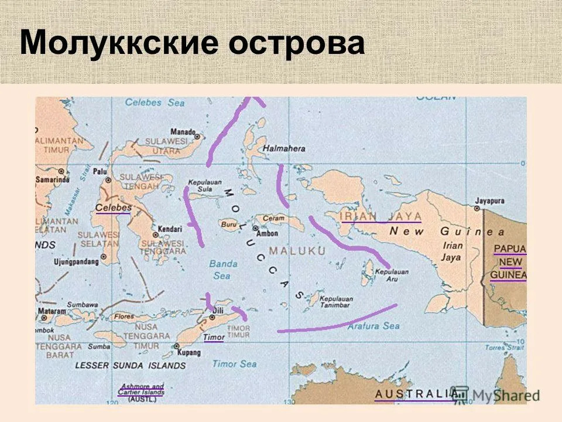
Молу́ккские острова́, также известные как Острова́ пря́ностей -
индонезийская группа островов между Сулавеси и Новой Гвинеей, к северу от острова Тимор.
Находятся на плите Хальмахера и в зоне столкновения с плитой Молуккского моря.
Территория островов - 74505 км².
Исторически острова получили название Острова пряностей от китайцев и европейцев, однако
главным образом это название относится к небольшим вулканическим островам архипелага Банда,
где выращивается мускатный орех.
Общая площадь архипелага Молуккских островов - 850000 км², 90% её покрыто водой.
В общей сложности в состав архипелага входит 1027 островов. Три крупнейших острова,
Хальмахера - 17780 км², Серам - 17100 км² и Буру - 9505 км² едва заселены, а наиболее
развиты небольшие острова Амбон и Тернате.
Большая часть островов гористые и лесистые. Острова Танимбар сухие и холмистые, в то
время как острова Ару плоские и болотистые. Гора Биная (3027 м) на острове Серам -
наивысшая точка архипелага. На некоторых островах находятся действующие вулканы.
Множество островов, аналогичных Тернате (1721 м), представляют собой вершины вулканов,
поднимающихся из моря, с деревнями, расположенными вдоль побережья. За последние 500 лет
произошло более 70 мощных извержений вулканов и землетрясений в регионе.
Молуккские острова представляют собой один из наиболее геологически сложных и активных
регионов мира, что связано с тем, что они находятся в точке встречи четырёх геологических
плит и двух континентов.
Коренные жители островов Банда торговали пряностями с другими азиатскими народами,
в частности с китайцами, ещё во времена Римской империи. С распространением ислама
основными торговыми партнёрами стали мусульманские купцы.
Загадочная мистика Островов пряностей в конечном счёте исчезла, когда французы и
британцы успешно вывезли с островов семена и образцы растений в свои колонии на Маврикии,
Гренаде и в других регионах, что в конечном счёте привело к тому, что пряности стали
заурядным продуктом.
Азорские острова
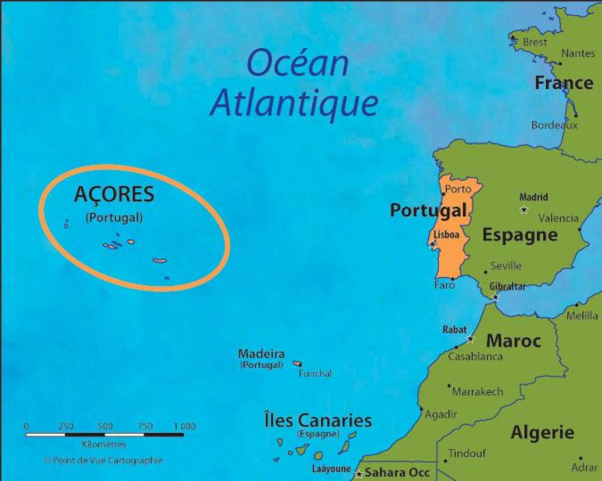
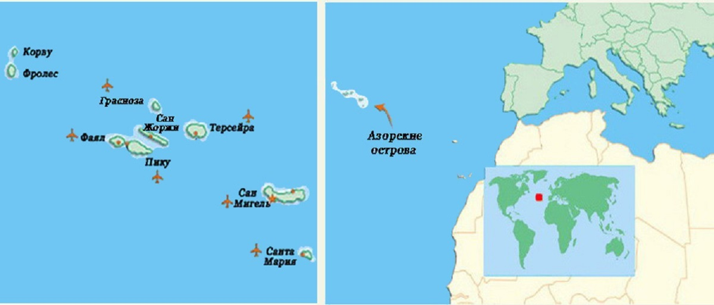
Название островов, скорее всего, происходит от устаревшего португальского слова «azures»
(созвучно русскому «лазурь»), что буквально означает «голубые».
Есть и более поэтичная версия, утверждающая, что своё название острова взяли от слова
«Açor» — ястреб («Ястребиными» острова называли арабы).
Архипелаг состоит из островов вулканического происхождения.
Действующий вулкан Пику (2351 м) является крупнейшей вершиной Португалии.
Азорские острова — родина эндемичных видов животных и растений, таких как
азорина (Azorina) и азорский снегирь (Pyrrhula murina).
Точная дата открытия Азорских островов неизвестна. Есть основания полагать,
что Азорские острова были известны ещё карфагенянам. Это доказывают
найденные на Корву пунические монеты. Предположительно в IX веке
здесь высаживались норманны. Знали о них и арабы.
Колонизация необитаемых островов началась в 1439 году, когда на них прибыли
первые люди, в основном из провинций Алгарви и Алентежу. В следующие века
острова заселялись жителями стран Европы, в основном северной Франции и Фландрии.
В 1580—1640 годах Азорскими островами, в связи с ослаблением власти Португалии в её
доминионах, управляла Испания. В это время близ островов шли ожесточённые бои между
испанскими и английскими пиратами. Экономическому процветанию островов
способствовало предоставление Португалии независимости и вступление на престол
династии Браганса в 1640 году. Так как Азорские острова занимали выгодное
стратегическое положение, в XVI—XVII веках они превратились в центр
судоходства Европы, Африки, Востока и Америки.
Мальдивские острова
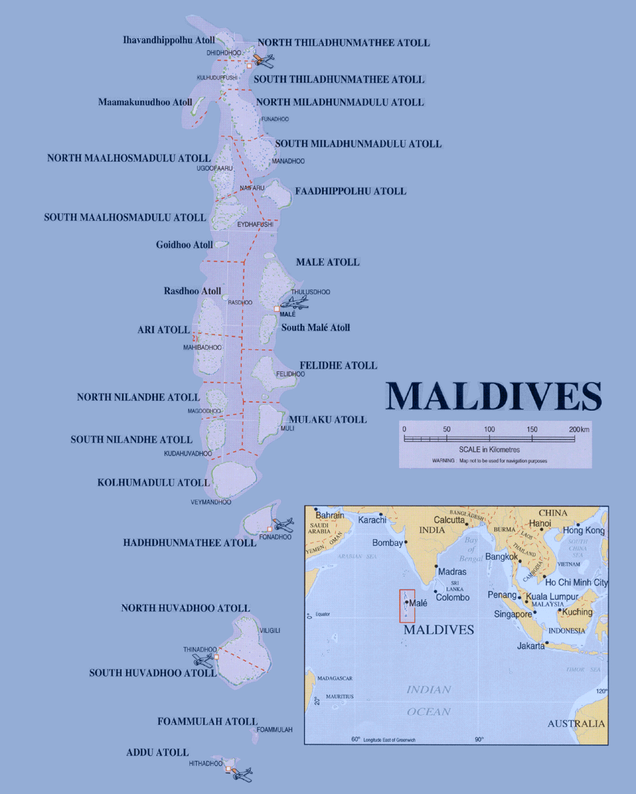
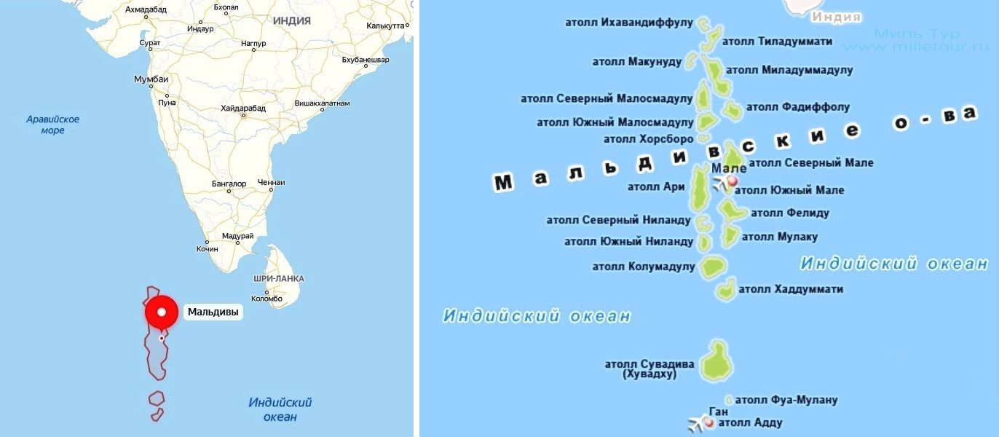
Мальдивы составляют около 1200 островов в Индийском океане.
В I тысячелетии н. э. население составляло племена сингалов, индийцы,
малайцы, исповедовавшие буддизм.
Архипелаг был заселён более двух тысячелетий назад выходцами из
современных Шри-Ланки и Индии. Первые мальдивцы не оставили никаких археологических
останков. Их здания, вероятно, были построены из дерева, пальмовых листьев
и других скоропортящихся материалов, которые быстро разложились в
соли и на воздухе тропического климата.
Сравнительные исследования мальдивских устных, лингвистических и культурных традиций
и обычаев показывают, что один из самых ранних поселенцев был потомком тамилов из
древнего Тамилакама в период Сангам (300 г. до н. э. — 300 г. до н. э.).
В V—VII веках на островах появились арабы и персы.
До XII века Mальдивцы исповедовали буддизм, но в 1153 году на Mальдивах высадился
один из арабских проповедников ислама. Он действовал весьма активно, и вскоре все
население было обращено в ислам.
В 1558 году Мале захватили португальцы и построили там форт. Однако уже в 1573 году
мальдивцы уничтожили и изгнали португальцев. Затем на архипелаге попытались закрепиться
голландцы, также безуспешно.
В 1887 году Британия установила свой протекторат над Mальдивами.
26 июля 1965 года Британия предоставила Mальдивам независимость.
Фолклендские острова (Мальви́нские острова)
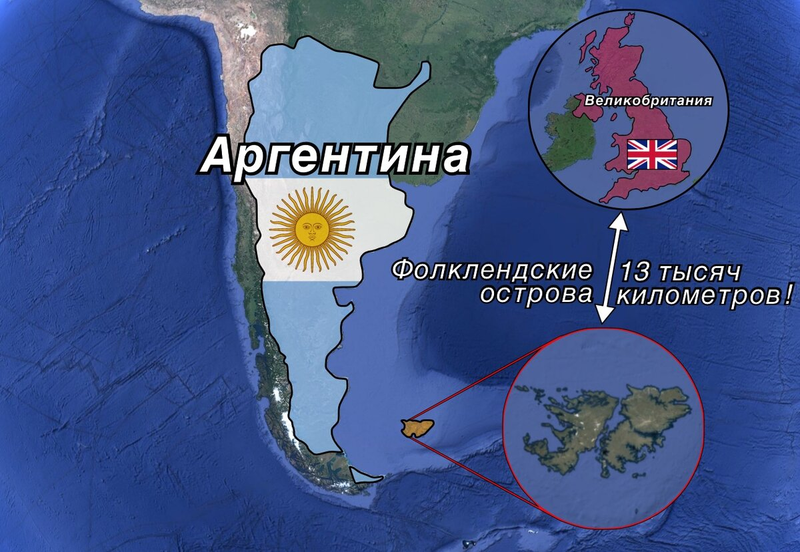
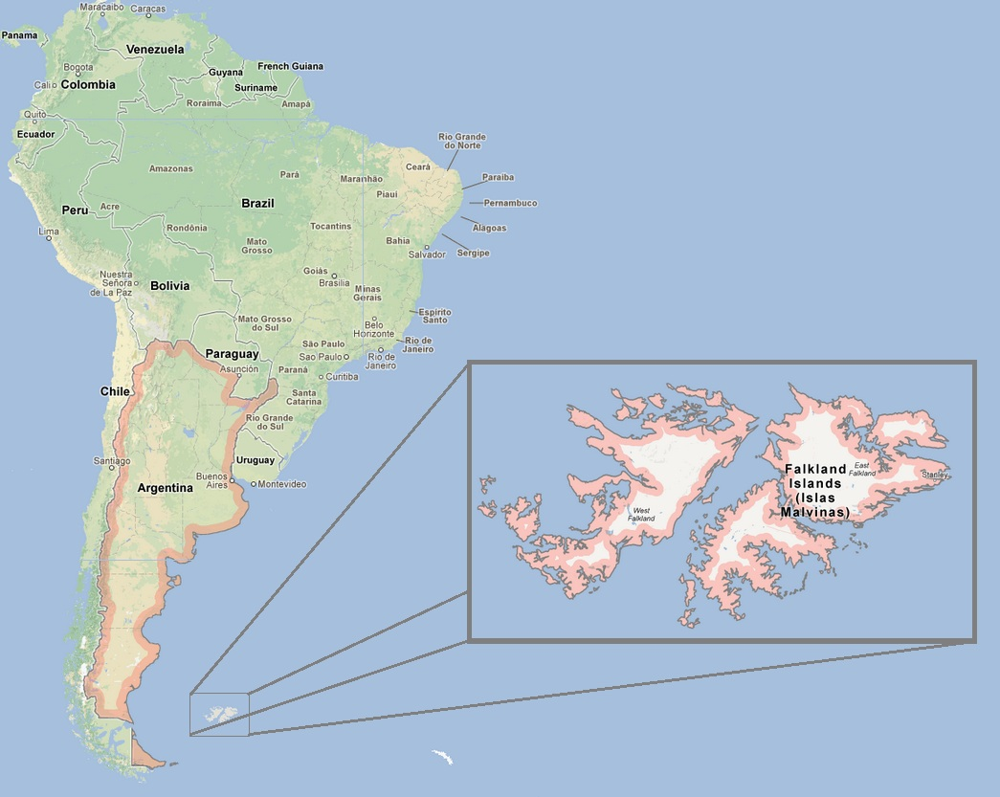
Фолкле́ндские острова́ (англ. Falkland Islands, Мальви́нские острова, исп. Islas Malvinas) —
архипелаг в юго-западной части Атлантического океана. Фактически Фолклендские острова являются
британской заморской территорией и важным перевалочным пунктом на пути из Атлантического океана
в Тихий, позволяющим контролировать Южную Атлантику. Права Великобритании на острова оспариваются
Аргентиной, рассматривающей их как часть провинции Огненная Земля, Антарктида и острова Южной
Атлантики. В испаноязычном мире архипелаг называется Мальвинскими островами.
Фолклендские острова получили своё название от Фолклендского прохода — пролива между двумя
главными островами архипелага. Название для пролива было выбрано англичанином Джоном Стронгом
в 1690 году в знак уважения к его патрону Энтони Кэри, 5-му виконту Фолклендскому. Позднее
это название было расширено на всю группу островов.
Испанское название происходит от французского названия, фр. Îles Malouines,
данного Луи Антуаном де Бугенвилем в 1764 году в честь первых известных поселенцев-островитян,
моряков и рыбаков из бретонского порта Сен-Мало во Франции.
Фолклендские острова состоят из двух крупных (Западный и Восточный Фолкленд) и около 776 мелких
островов и скал. Архипелаг находится на расстоянии 343 км от аргентинского острова Эстадос, 463 км от
побережья Южной Америки и 1078 км от скал Шаг (Южная Георгия). Общая площадь составляет 12173 км².
Общая длина береговой линии — около 1300 км, побережье сильно изрезано. Острова Западный и
Восточный Фолкленд разделены Фолклендским проливом. Высочайшая точка архипелага —
гора Асборн (705 м, расположена на острове Восточный Фолкленд), гора Адам на острове Западный
Фолкленд имеет высоту 700 м. На островах нет длинных рек, однако есть большое количество ручьёв,
которые обычно впадают в ближайший фьорд или бухту.
Мальвинские острова были открыты в 1520 году португальским мореплавателем Эштебаном Гомешом,
командовавшим кораблём «Сан-Антонио» на службе у испанской короны в экспедиции Фернана Магеллана.
Гомеш дезертировал из экспедиции в районе Магелланова пролива и вернулся 6 мая 1521 года в
Испанию по гвинейскому маршруту.
Европейцы не обнаружили на островах коренного населения, однако в древности они могли посещаться
огнеземельцами. Во второй половине XIX века на островах архипелага Кеппел и Пеббл были обнаружены
орудия и следы поселения, оставленного морским племенем ягана с Огненной Земли.
Марианские острова (Ладронские острова)
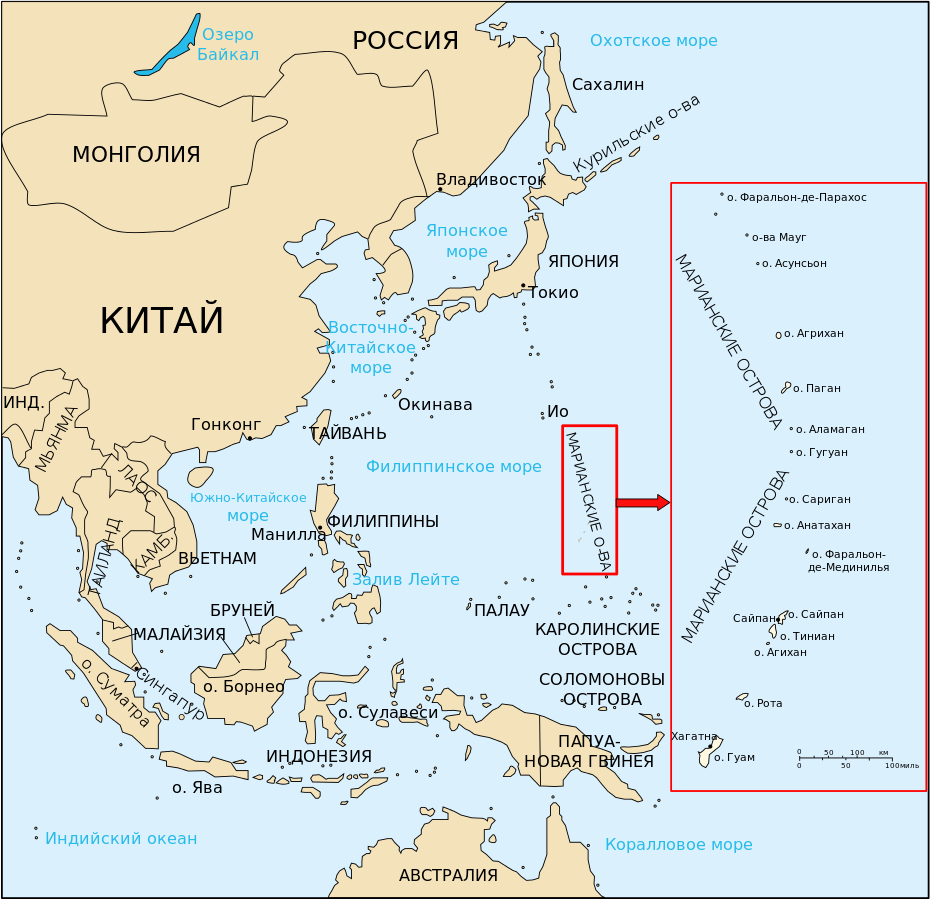
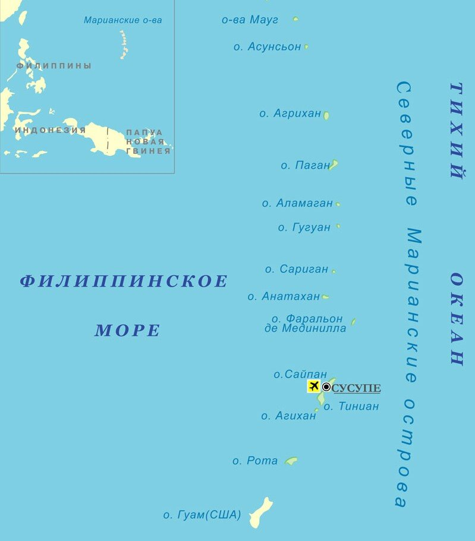
Мариа́нские острова́ - группа островов на западе
Тихого океана, в Микронезии. Включает в себя 15 крупных островов и
несколько мелких островов и рифов. Общая площадь - около 1018 км².
Вдоль островов проходит глубоководный Марианский жёлоб.
Острова вытянуты между 12 и 21 градусом северной широты примерно на 800 км.
В геологическом отношении острова можно разделить на две группы: более старая
южная островная дуга (острова Гуам, Рота, Тиниан, Агихан, Сайпан) и молодая
вулканическая северная дуга (остальные острова архипелага). Южные
острова образовались приблизительно 15-20 млн лет назад (в позднем эоцене -
раннем миоцене). Все они имеют схожее строение и покрыты слоем известняка -
остатков древних коралловых рифов. Группа испытывала несколько поднятий.
Северная группа является частью марианской дуги, в месте где Тихоокеанская
плита опускается под Филиппинскую. Все острова этой группы являются
стратовулканами. Большинство островов окружены коралловыми рифами. Рифы
южных островов старше и лучше развиты. В районе островов расположено
около 50 подводных вулканов и 11 вулканов образуют острова.
Согласно археологическим данным, первые люди появились на островах
2000 лет до н. э. и были выходцами из юго-восточной Азии. Позже первые
поселенцы стали известны как чаморро.
6 марта 1521 года моряки экспедиции Фернана Магеллана стали первыми европейцами,
увидевшими острова (испанские корабли остановились в бухте Уматак у острова Гуам).
Из-за первой неприятной встречи с чаморро Магеллан дал островам название
Las Islas de los Ladrones («острова Воров»), так как аборигены украли
некоторые предметы с кораблей Магеллана.
В 1668 году на острова прибыли миссионеры во главе с Диего Луисом Сан-Виторесом.
Он дал островам новое название в честь испанской королевы Марианны Австрийской,
вдовы Филиппа IV.
После Испано-американской войны Испания уступила США южную часть Марианских островов,
а северную часть продала Германской империи по договору от 12 февраля 1899 года.
После Первой мировой войны Марианы были поставлены Лигой Наций под управление
Японии, после Второй мировой войны — ООН под управление США (американцы завладели
островами в 1944 году, и с острова Тиниан взлетали самолёты, сбросившие бомбы
на Хиросиму и Нагасаки 6 августа и 9 августа 1945 года соответственно).
В 1978 году США предоставили островам особый статус: Северные Марианские острова (477 км²)
и Гуам (541 км²) стали считаться неинкорпорированными организованными территориями США.
В 1986 году жителям островов был предоставлен статус граждан США.
Маршалловы острова
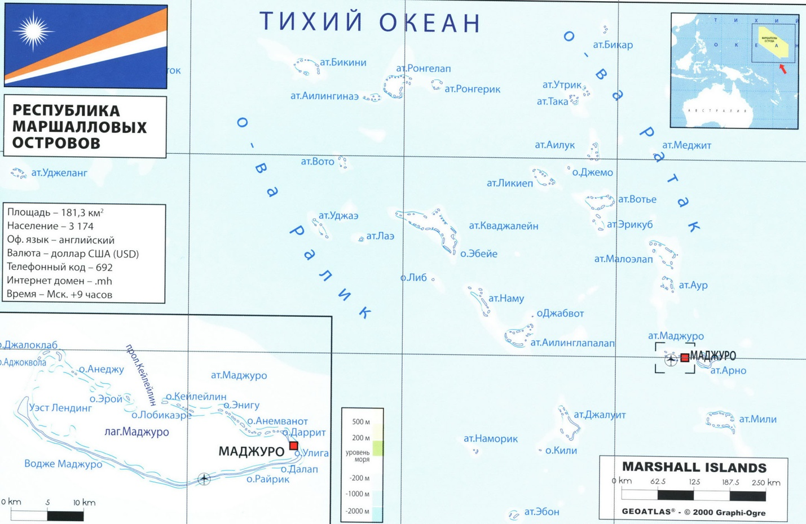
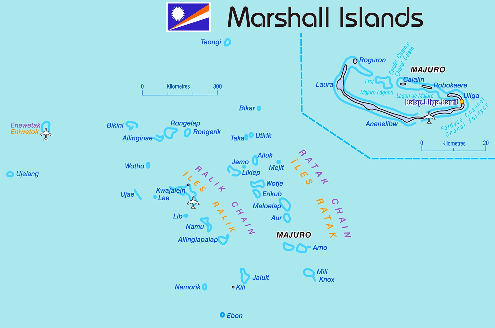
Марша́лловы Острова́ (официальное название - Респу́блика Марша́лловы Острова́) - тихоокеанское
государство в Микронезии, ассоциированное с США.
Граничит на западе и юго-западе с водами Федеративных Штатов Микронезии, на юге с водами Кирибати,
в остальных частях - с открытым морем Тихого океана. Протяжённость прибрежной полосы 370,4 км.
Общая площадь суши - 181,3 км²; территории, занятой лагунами - 11673 км².
Первым островом, замеченным европейцами, стал атолл Бокак, открытый испанским мореплавателем Алонсо де Саласаром в 1526 году.
Маршалловы Острова названы в честь британского капитана Джона Маршалла (также известного под именем
Уильям Маршалл), который вместе с другим капитаном Томасом Гилбертом, в честь которого названы
соседние острова Гилберта, исследовал архипелаг в 1788 году во время перевозки заключённых в Новый Южный Уэльс.
Микронезийское государство Маршалловы Острова представляет скопление из атоллов и островов, расположенных
в Тихом океане немного севернее экватора. Столица страны, город Маджуро, расположен в 3438 км к западу
от города Гонолулу, административного центра американского штата Гавайи.
Площадь суши Маршалловых Островов составляет всего 181,3 км², в то время как площадь территории,
занятой лагунами - 11 673 км². Страна расположилась на 29 атоллах и 5 отдалённых островах, которые
разделены на две группы: 18 островов в цепи Ралик (в переводе с маршалльского языка «закат») и 16 островов
в цепи Ратак (или Радак; в переводе с маршалльского языка «восход»). Обе цепи находятся примерно в
250 км друг от друга и тянутся с северо-запада на юго-восток примерно на 1200 км. Важнейшими островами
являются атоллы Кваджалейн и Маджуро. Крупнейший остров Республики Маршалловы Островов, Кваджалейн,
одновременно является атоллом с крупнейшей лагуной в мире. Несмотря на то, что площадь его суши
всего 16,32 км², площадь лагуны составляет 2174 км².
Все острова низменны, а атоллы состоят из большого количества моту (небольшие острова, окружающие
центральный остров атолла, образовавшиеся в результате подъёма кораллового рифа), общая численность которых
в стране превышает 1100. Высшая точка страны, которая достигает всего 10 м, расположена на атолле Ликиеп.
Гавайские острова (Сандвичевы острова)
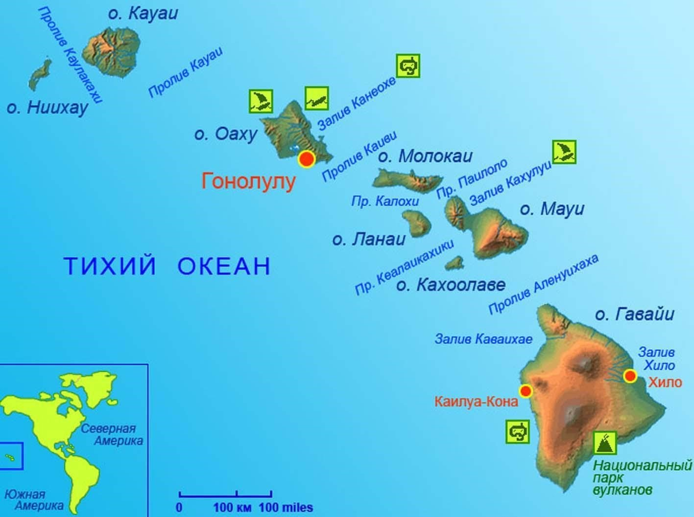
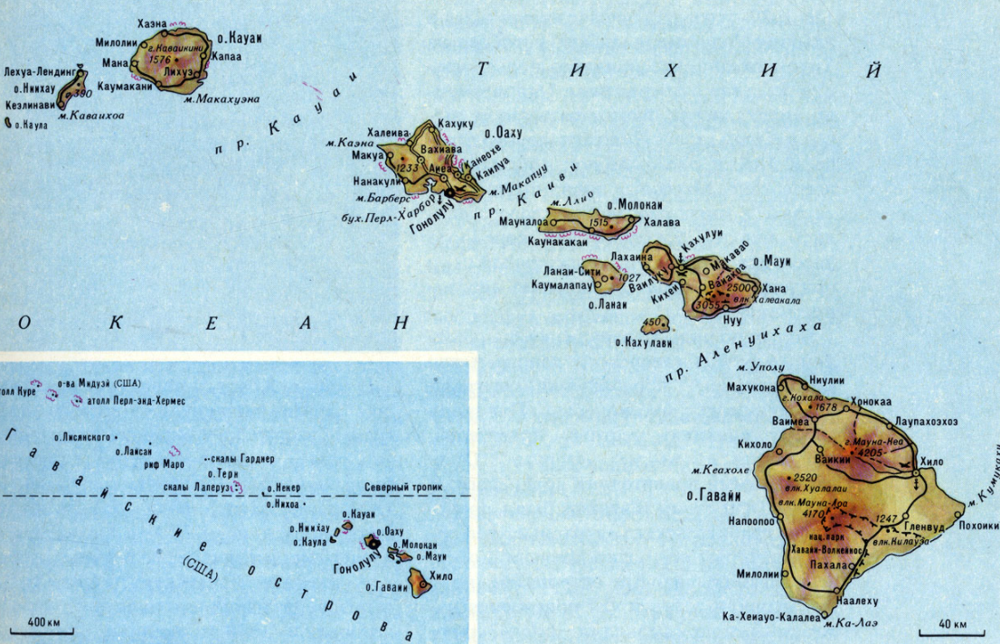
Гава́йские острова́ - архипелаг из 24 островов и атоллов, расположенный в северной части Тихого океана
(между 19° и 29° северной широты). Архипелаг вытянут с северо-запада на юго-восток.
Острова получили своё название от названия самого крупного острова — Гавайи. Почти все
острова архипелага образуют штат Гавайи США (с 1959 года). Единственным исключением является
атолл Мидуэй на крайнем западе, который является неинкорпорированной неорганизованной территорией
США (то есть принадлежит им, но не является их частью).
Гавайские острова для европейцев открыл 18 января 1778 года знаменитый английский мореплаватель
Джеймс Кук во время своего 3-го путешествия по Тихому океану (здесь же он и погиб 14 февраля 1779 года,
когда вернулся на зимовку после плавания по северной части Тихого океана). Кук дал им название
Сандвичевы острова (это название использовали до конца XIX века) в честь Первого лорда
Адмиралтейства Джона Монтегю, 4-го графа Сэндвича.
К моменту прибытия Кука Гавайские острова уже почти полтора тысячелетия населяли полинезийцы.
Согласно наиболее распространённой точке зрения, первые полинезийцы прибыли с Маркизских островов
около 300 года н. э., за ними приблизительно в 1300 году последовали переселенцы с Таити,
покорившие первых поселенцев и сформировавшие более сложную религиозную и социальную систему.
Приход полинезийцев принёс с собой новые растения и животных, в первую очередь собак, свиней и крыс.
По мнению учёных, первые поселенцы обнаружили здесь 67 видов птиц, треть из которых в настоящее время
считается вымершими. При этом они не обнаружили рептилий, амфибий, москитов, вшей, мух и даже тараканов.
Млекопитающие представлены были всего двумя видами: бело-серой летучей мышью и тюленем-монахом.
Северо-западные Гавайские острова (или Подветренные Гавайские острова, или малые Гавайские острова) —
практически не обитаемые атоллы, рифы, скалы и отмели.
Цепочка островов архипелага сформирована в результате вулканической деятельности и движения
тихоокеанской литосферной плиты на северо-запад над магматической Гавайской горячей точкой со
скоростью порядка 52 километра за 1 миллион лет. В связи с этим острова на северо-западе старше, и,
в большинстве своём, меньше по размеру (так как они дольше подвергаются эрозии).
21 августа 1959 года «Территория Гавайи» получила статус штата США, 50-го по счёту.
Галапагосские острова
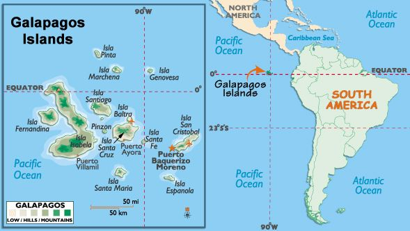
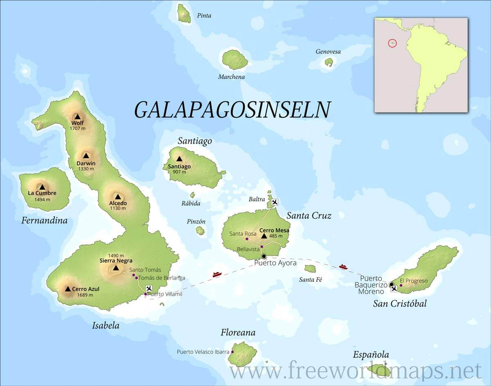
Галапагосские острова - это архипелаг вулканических островов
в восточной части Тихого океана, расположенный в экваториальной зоне в 900 км
к западу от Южной Америки.
Названы они в честь их гигантских черепах, которые
были более многочисленны на момент их открытия. Испанское слово galápago происходит от
доримского иберийского слова, означающего "черепаха".
Вулканическая активность на Галапагосских островах не прекращалась по меньшей мере в течение
20 миллионов лет, а возможно, и дольше. Мантийный плюм под движущейся на восток плитой
Наска (51 км/млн. лет) образовал платформу толщиной 3 километра под цепью островов и подводными горами.
Для Галапагосского архипелага характерны многочисленные действующие вулканы, некоторые из
которых имеют магматические источники, другие — из астеносферы, возможно, из-за молодой
и тонкой океанической коры.
На данный момент нет никаких убедительных доказательств того, что полинезийцы или коренные
народы Южной Америки достигли Галапагосских островов до того, как они были случайно обнаружены
епископом Томасом де Берланга 10 марта 1535 года. Если какие-то посетители и приплывали сюда, то
ограниченный доступ к пресной воде на островах, по-видимому, препятствовал заселению.
Острова были необитаемы, засушливы и бесплодны.
Первым английским капитаном, посетившим Галапагосские острова, был Ричард Хокинс в 1593 году.
До начала 19 века архипелаг часто использовался как убежище (в основном английскими) пиратами,
которые нападали на испанские флотилии с сокровищами.
Острова входят в состав провинции Галапагосские острова Эквадора.